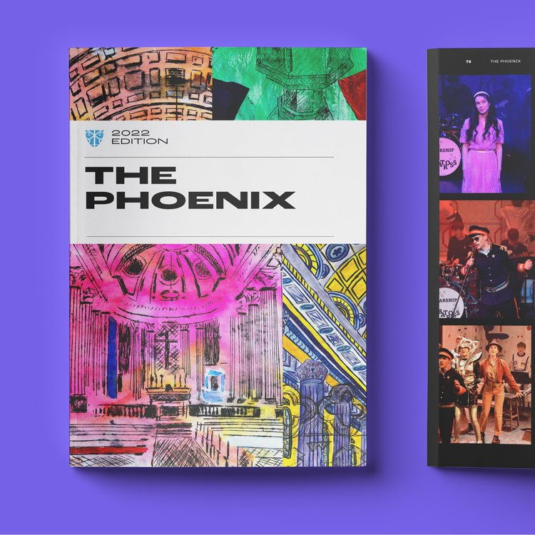
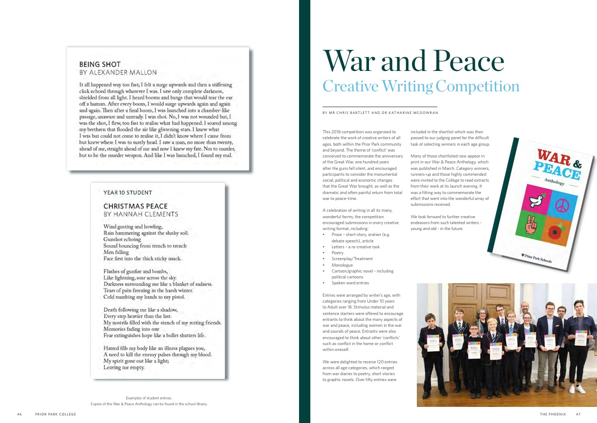
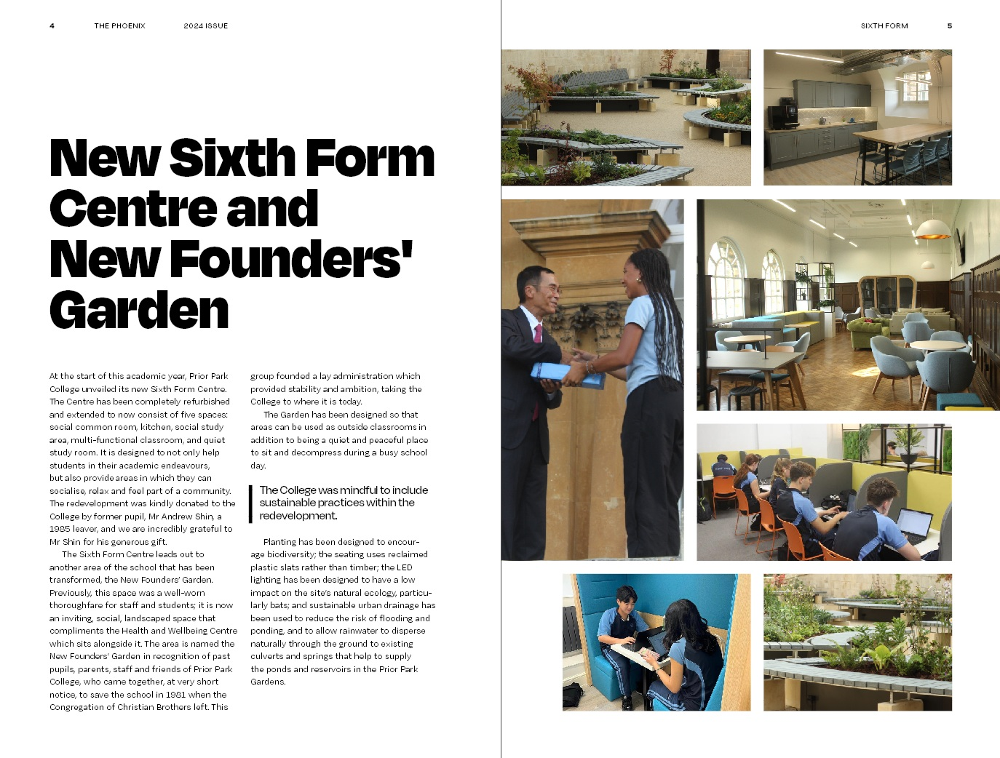
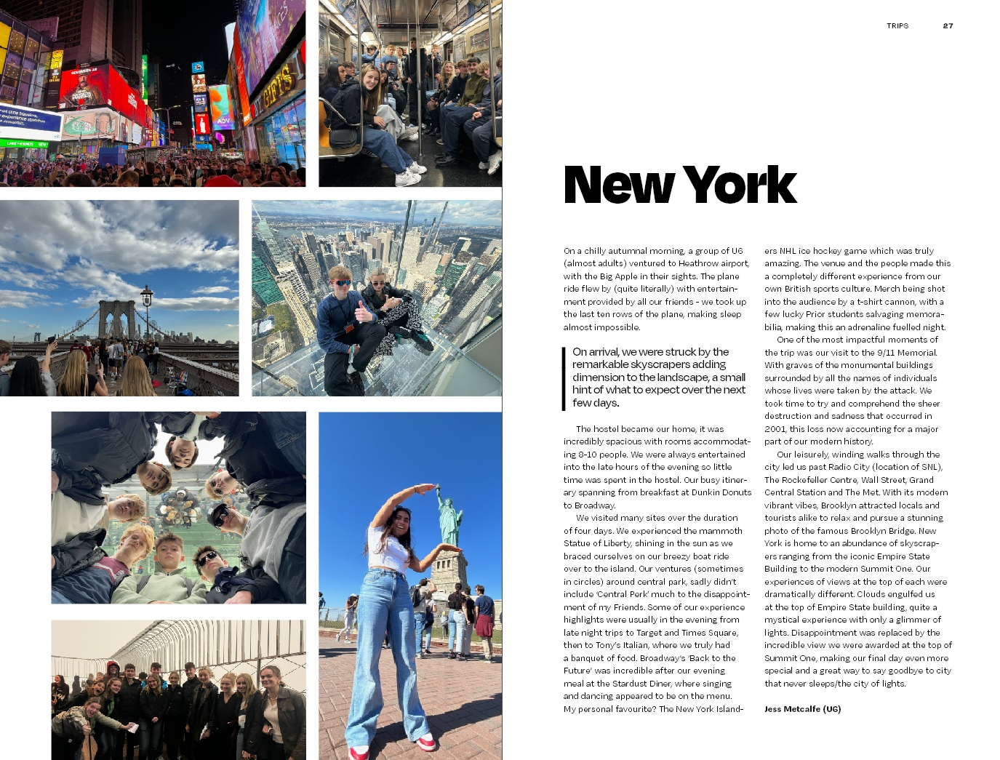
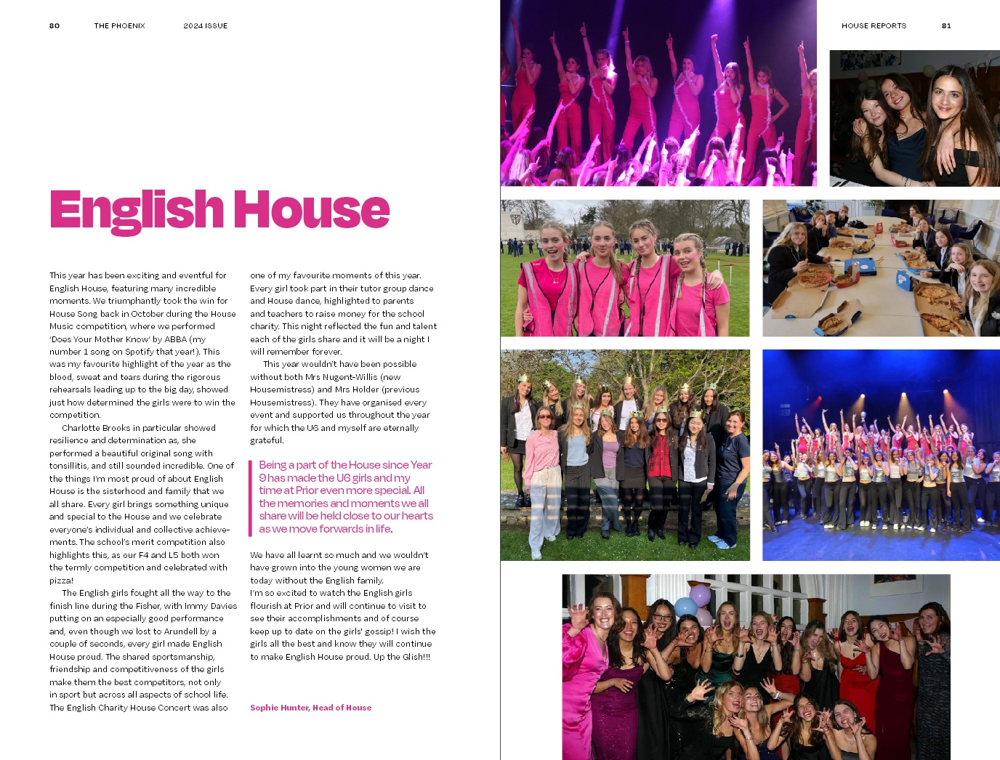
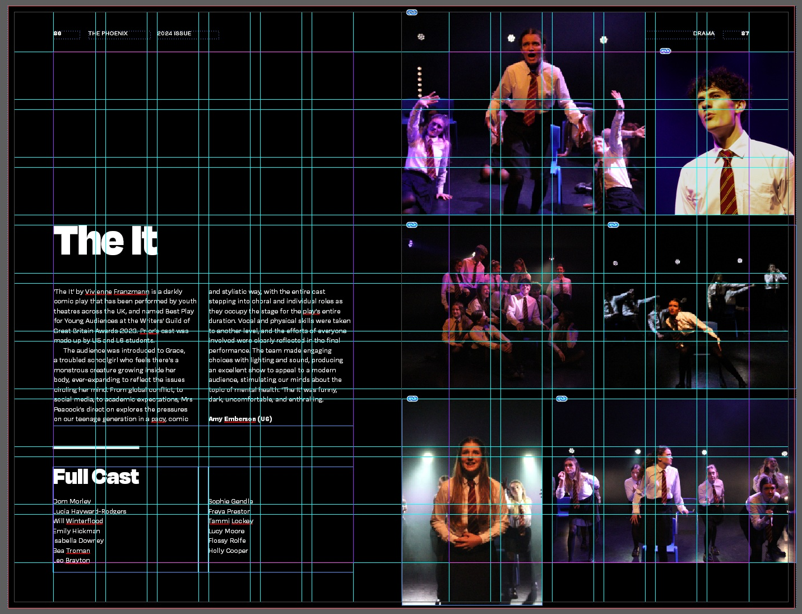
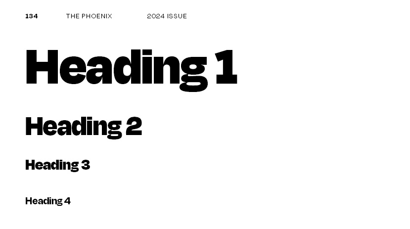
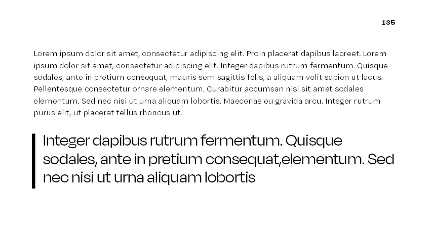

Project type: Editorial Design
Role: Lead Designer
Key objectives: Create a visually cohesive magazine that captures school spirit while showcasing student stories and academic achievements.

Problem: The Phoenix magazine lacked a consistent design language, and the editorial process needed a more streamlined and cohesive visual direction.
Outcome: By redesigning the layout and establishing a consistent visual theme, I was able to enhance the overall readability and aesthetic, allowing the stories to shine and the school’s identity to come through clearly.

Before

After
The magazine had been using outdated layouts, and the lack of consistency across pages made it difficult to maintain a cohesive visual identity. Additionally, there was a need to better highlight student stories and important milestones in a way that aligned with the school’s overall branding.
I worked closely with the client to establish a cohesive visual theme that reflected the school’s values while allowing the content to be the main focus. I chose typography, color schemes, and imagery that aligned with the school's brand, while keeping a modern and fresh vibe that would appeal to students and parents.


I created a flexible grid system that worked across the magazine’s varying content types—articles, student features, photography spreads, and academic highlights. This ensured every section felt unified while still allowing for unique content presentation.

I adjusted font sizes, line spacing, and color contrasts to enhance readability, especially for articles with long blocks of text. This allowed students and alumni to easily engage with the stories while enjoying a visually appealing experience.


Editorial design is about layering functionality and style. By focusing on visual consistency and readability, I created a strong base for the stories to come to life, while allowing the individuality and personality of the students shine.
Although it was a challenging process (as a 200 page magazine!), the results are always more than worth it. It’s rewarding to see the positive feedback and how the magazine has grown into a valuable piece of the school’s history.